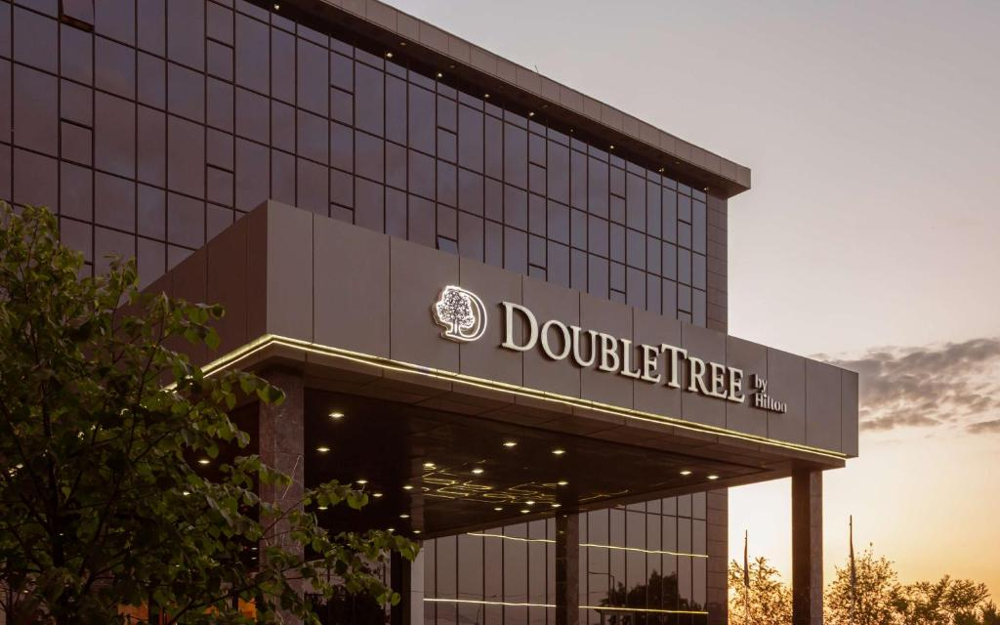

Rixos Khadisha Shymkent
Rixos Khadisha Shymkent - уникальное место для отдыха и работы
в Шымкенте, городе, наследующем богатую историю Шелкового пути и окруженноt
историческими соседями. Гости отеля могут наслаждаться современным дизайном и роскошными
номерами, погрузиться в местную культуру и попробовать известные местные сорта пива.
Спа и изысканная кухня дополняют обстановку, делая пребывание незабываемым.
Адрес: 17 Zheltoksan Str | Телефон: +7 7252 61 01 01
Shymkent Grand Hotel
Shymkent Grand Hotel, известный как гостиница "Шымкент" или "Чимкент", символ
Южно-Казахстанской области, предлагает улучшенный интерьер, высокий уровень сервиса и
комфортабельные номера. Соответствующие современным стандартам конференц-залы
обеспечивают комфорт для взыскательных гостей. Здание гостиницы обшито инновационным
материалом, сохраняя прохладу летом и тепло зимой, что способствует экономии энергии.
При этом цены остаются доступными для посетителей.
Адрес: Шымкент, проспект Республики, 6А | Телефон: +7 (7252) 560-560

Double tree by Hilton
DoubleTree by Hilton в Шымкенте представляет идеальное сочетание удобного расположения в
центре города с превосходным видом на парк Абая и близостью к торговым центрам, таким
как Шымкент Плаза и Мега Планет. Наши гости могут легко добраться до Центрального парка
и Парка Независимости всего за 10 минут, наслаждаясь при этом уютом и комфортом номеров.
Предлагаемый крытый бассейн с подогревом и современный фитнес-центр придают нашему отелю
дополнительную привлекательность, гарантируя незабываемый опыт проживания для каждого
гостя..
Адрес: 43 B.Momyshully | Телефон: +7 7252 55 12 12
Ramada by Wyndham Shymkent
Отель Ramada by Wyndham Shymkent предлагает 86 уютных номеров, четыре просторных
конференц-зала, оборудованных всем необходимым для проведения мероприятий, с элегантным
дизайном, а также превосходный ресторан с разнообразным выбором изысканных блюд.
Фитнес-зал, СПА-центр с джакузи, сауной и салоном красоты позволяют гостям расслабиться
и насладиться качественным отдыхом. Южное гостеприимство и беспрецедентный сервис делают
пребывание в этом отеле в Шымкенте по-настоящему запоминающимся и комфортным.
Адрес: Ryskulova 205a | Телефон: +7 7252 778877
Aidana Plaza
Четырехзвездочный отель Aidana Plaza с рестораном и баром расположен в городе Шымкент.
Стойка регистрации открыта круглосуточно, осуществляется доставка еды и напитков в
номер. Предоставляется бесплатный Wi-Fi на всей территории. Для гостей организуют
трансфер от/до аэропорта. В распоряжении гостей письменный стол, кондиционер,
холодильник, сейф, телевизор с
плоским экраном, чайник, мини-бар и собственная ванная комната с душем. Во всех номерах
отеля Aidana Plaza предоставляются полотенца и постельное белье.
Адрес: Beybitshilik Avenue 13 | Телефон: +7 (7252) 777-771
Гостинница «Астана»
Гостиничный комплекс «Астана», с четырьмя этажами, удобно расположен почти в центре
Шымкента, всего в 5 километрах от Международного аэропорта. Открывается прекрасный вид
на уникальную архитектуру нового административного центра города. На его территории вы
найдете рестораны, бары, конференц-залы, выставочный павильон и бильярд. Всего здесь 33
номера, включая 17 стандартных, 10 номеров класса люкс с одной спальней, 5 номеров
класса люкс с двумя спальнями и 1 Президентский номер. Каждый номер оборудован
высокоскоростным интернетом, мини-баром, индивидуальной системой кондиционирования
воздуха, а в номерах класса люкс также имеется сейф. Комплекс предлагает 2 бара и 2
ресторана с разнообразными блюдами европейской и национальной кухни, а его банкетные
залы идеально подходят для проведения различных мероприятий и торжеств.
Адрес: Тамерлановское шоссе 204а | Телефон: 87789934444